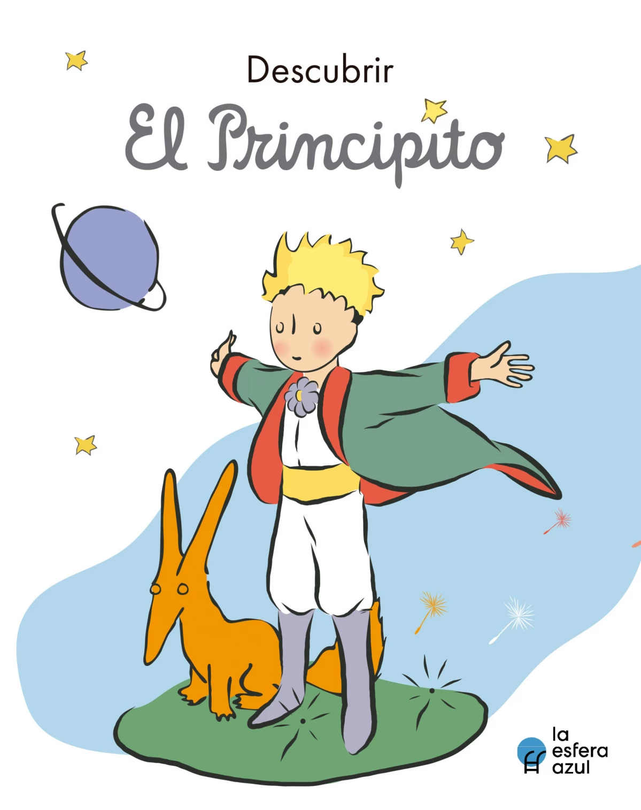
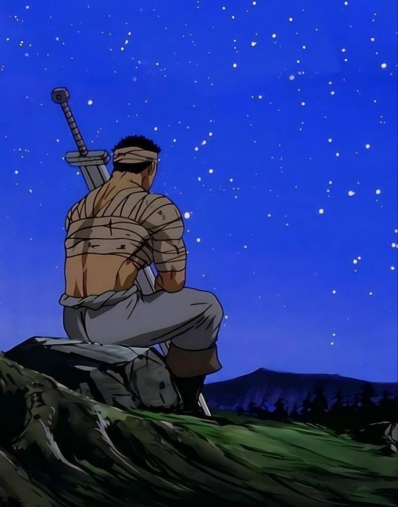

> libros
libros favoritos
El principito :
Un clásico de la literatura universal que narra el viaje de un pequeño príncipe por el universo y su reflexión sobre la vida, el amor y la amistad

Berserk :
las historia de un niño que nace en tiempos de guerra fue criado por un mercenario cuando crece lo unico que sabe es matar y emprende un viaje de auto descubrimiento

destruye para sanar :
¿Te gustaría encontrar la paz interior y sanar tu alma? En "Destruye para sanar", encontrarás una guía de preguntas personales que te llevarán en un viaje de introspección y transformación personal.